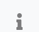

Navigation
Main Navigation
Note: Some menu items are hidden pending login. Menus are dependent on the user's permissions to the application.
File
- Home - This is the first screen users see after login. It lists the Core Features, links to request support, and new features and improvements in the latest Trifolia-on-Fire (ToF) release.
- New Project - Start a new implementation guide (IG).
- Open project - Continue working on an existing IG.
- Open from computer - Open a resource directly from their computers, either as an XML file or JSON file, and edit the resource in ToF without saving the resource to the FHIR server. When saving, the browser prompts users to re-download the updated resource as an XML or JSON file depending on the format when opened.
Help
- Documentation - Opens this help documentation in HTML format.
- Request Support - Opens the support page for ToF, where users can submit support requests (defects, new ideas for features/improvements and general questions).
- Settings - Change FHIR server.
Browse/Edit - Search, select, delete, and create new resources depending on the resource type selected in the sub-menu.
- Implementation Guides
- Profiles
- Capability Statements
- Operation Definitions
- Value Sets
- Code Systems
- Questionnaires
Import - Import resources from other locations into ToF.
- Export - Export implementation guides from ToF in various formats (i.e., bundles, FHIR IG Publisher package, GitHub, etc).
- Publish - Publish your implementation guide using the FHIR IG Publisher.
Help-Access the Help documentation and request support.
FHIR Server
ToF supports multiple versions of the FHIR standard. ToF currently supports STU3 and R4. Users can select a FHIR server at the top right of every screen.
For more information, see FHIR Versions.
Login
Log into your account or update your profile. For more information, see Accounts and Login.
Information
Click the  (information) icon in the top-right corner to learn key points of interest on the screen.
Note: Not all screens support this functionality, i.e. the Home screen.